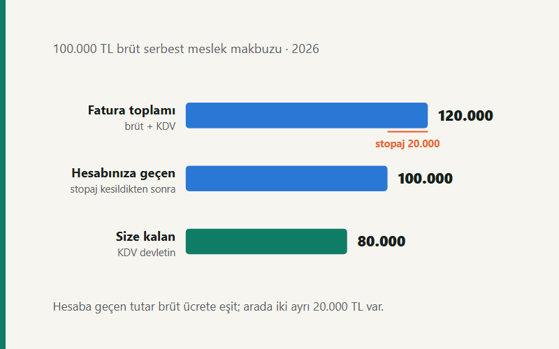

Kısa cevap
Serbest meslek ödemelerinde brüt ücret üzerinden %20 stopaj kesilir; kesintiyi siz değil, ödeyen taraf yapar ve vergi dairesine o yatırır. Makbuza ayrıca %20 KDV eklenir. İki oran eşit olduğu için hesabınıza geçen tutar brüt ücrete eşit çıkar ve bu, hiçbir şey kesilmemiş gibi görünmesine yol açar.
Asıl mesele ikincisi: stopaj nihai vergi değil, peşin ödemedir. Yıl sonunda kazancınız tarifeye göre vergilenir ve kesilen stopaj mahsup edilir. 2026 tarifesinde, gidersiz varsayımla, yıllık kazancınız 535.714 TL'nin altındaysa iade alırsınız; üstündeyse fark ödersiniz.
Makbuzun aritmetiği
Sırayı bozmadan izlemek gerekiyor, çünkü KDV brüte eklenir, stopaj ise brütten kesilir — ikisi aynı tutar üzerinden ama zıt yönde işler.
| Brüt ücret (hizmet bedeli) | 100.000 TL |
|---|---|
| + KDV (%20) | 20.000 TL |
| = Fatura toplamı | 120.000 TL |
| − Gelir vergisi stopajı (%20) | 20.000 TL |
| = Hesabınıza geçen | 100.000 TL |
| — bunun devlete ait olan KDV kısmı | 20.000 TL |
| Size kalan | 80.000 TL |
Tablodaki son iki satır, bu konudaki en yaygın karışıklığın kaynağı. Tahsil ettiğiniz KDV sizin geliriniz değil; devletin parasını bir süre taşıyorsunuz ve beyanname döneminde yatırıyorsunuz. Hesap bakiyesine bakıp "bu ay iyi kazandım" demek, o parayı kendi paranız sanmak demek.
KDV tevkifatı ne değiştiriyor?
Bazı hizmetlerde ve bazı alıcılara (kamu kurumları, belirlenmiş mükellefler) kesilen makbuzlarda KDV'nin bir kısmını alıcı size ödemez; doğrudan vergi dairesine yatırır. Buna KDV tevkifatı denir.
| KDV tevkifatı | Fatura toplamı | Kesilen stopaj | Alıcının doğrudan yatırdığı KDV | Hesabınıza geçen |
|---|---|---|---|---|
| yok | 120.000 | 20.000 | 0 | 100.000 |
| %50 | 120.000 | 20.000 | 10.000 | 90.000 |
| %70 | 120.000 | 20.000 | 14.000 | 86.000 |
| %90 | 120.000 | 20.000 | 18.000 | 82.000 |
Son sütun aşağı iniyor ama size kalan değişmiyor: her satırda 80.000 TL. Tevkifat, zaten devlete ödeyeceğiniz parayı elinizden geçirmiyor, o kadar. Nakit akışınız etkilenir — beyanname döneminde ödeyeceğiniz KDV azalır çünkü bir kısmı zaten yatırılmıştır.
Kendi oranlarınızla denemek için serbest meslek makbuzu hesaplama aracını kullanabilirsiniz; stopaj, KDV ve tevkifat oranlarını ayrı ayrı seçebiliyor ve netten brüte de çeviriyor.
Stopaj nihai vergi değil
Yıl içinde kesilen stopajların toplamı, yıl sonunda hesaplanan gelir vergisinden düşülür. İkisi birbirini tutmak zorunda değil — ve genelde tutmuyor.
| Yıllık kazanç | Yıllık gelir vergisi | Kesilen stopaj (%20) | Fark |
|---|---|---|---|
| 100.000 | 15.000 | 20.000 | 5.000 TL iade |
| 190.000 | 28.500 | 38.000 | 9.500 TL iade |
| 300.000 | 50.500 | 60.000 | 9.500 TL iade |
| 400.000 | 70.500 | 80.000 | 9.500 TL iade |
| 500.000 | 97.500 | 100.000 | 2.500 TL iade |
| 600.000 | 124.500 | 120.000 | 4.500 TL ek ödeme |
| 1.000.000 | 232.500 | 200.000 | 32.500 TL ek ödeme |
| 2.000.000 | 582.500 | 400.000 | 182.500 TL ek ödeme |
Tablonun ortasındaki donma dikkat çekici: 190.000 ile 400.000 TL arasında iade hep 9.500 TL. Sebebi şu — o aralıkta tarifenin marjinal oranı da %20, stopaj da %20. Her ek lira aynı oranda vergilenip aynı oranda kesildiği için fark büyümüyor; ilk dilimde (%15) fazladan kesilmiş olan 9.500 TL olduğu gibi duruyor.
Üçüncü dilim başlayınca (1.000.000 TL'ye kadar %27) tarife stopajı geçiyor ve fark kapanıyor. Tam olarak 535.714 TL kazançta ikisi eşitleniyor; o noktadan sonra her yıl fark ödersiniz.
Giderler bu eşiği yukarı taşır. Stopaj brüt hasılat üzerinden kesilir, vergi ise kazanç (hasılat − gider) üzerinden hesaplanır. Gideriniz varsa vergi düşer, kesilen stopaj değişmez; yani iade büyür ve eşik daha yüksek bir hasılata kayar. Yukarıdaki tablo gidersiz varsayımla kurulu ve bu yüzden en erken eşiği gösteriyor.
Kaynaklar ve güncelleme
Bu yazı en son 14 Eylül 2026 tarihinde gözden geçirildi. Vergi tablosundaki hiçbir sayı elle yazılmadı: hepsi sitenin bordro motorundaki ücret dışı gelir vergisi tarifesinden üretiliyor ve her değişiklikte testlerle yeniden doğrulanıyor. Bu tarife ücret tarifesinden farklıdır — üçüncü diliminin üst sınırı 1.000.000 TL, ücrette ise 1.500.000 TL.
- 193 sayılı Gelir Vergisi Kanunu m.94/2-b (stopaj) ve m.103 (tarife) — Mevzuat Bilgi Sistemi
- 3065 sayılı Katma Değer Vergisi Kanunu m.9 — tevkifat
- Yıllık parametreler ve metodoloji — Bordro motoru
Sık sorulan sorular
Serbest meslek makbuzunda stopaj oranı kaçtır?
Brüt ücret üzerinden %20. Kesintiyi ödemeyi yapan taraf yapar ve vergi dairesine o yatırır; paranın o kısmı size hiç gelmez.
Hesabıma geçen para neden brüt ücrete eşit çıkıyor?
İki oranın eşit olmasının sonucu. %20 KDV eklenir, %20 stopaj kesilir, tutar başladığı yere döner. Ama içindeki 20.000 TL tahsil ettiğiniz KDV'dir ve devlete aittir.
KDV tevkifatı size kalanı azaltır mı?
Hayır. Hesabınıza geçen parayı azaltır, size kalanı değiştirmez — zaten devlete ödeyeceğiniz KDV'nin bir kısmını alıcı doğrudan yatırmış olur.
Stopaj kesildiyse yıl sonunda vergi öder miyim?
Gidersiz varsayımla, 2026'da yıllık kazancınız 535.714 TL'nin altındaysa iade alırsınız; üstündeyse fark ödersiniz. Gideriniz varsa eşik yukarı kayar.
İlgili araçlar ve yazılar
- Serbest Meslek Makbuzu Hesaplama — brütten nete, netten brüte, tevkifatlı
- Stopaj nasıl hesaplanır? — brütleştirme ve mahsup mantığı
- Şahıs mı, limited mi? — aynı kazanç hangi yapıda ne bırakıyor
- Ücret–kâr payı optimizasyonu — şirket ortağı için dağılım